Initialisation du système
Certaines actions sont à réaliser à chaque démarrage de la machine virtuelle. Vous les trouverez dans la partie "Actes réflexes".
Au moment de la première initialisation, veuillez suivre les instructions présentes dans la partie "Premier paramétrage". Ceci vous permettra d'utiliser la machine virtuelle de manière simple et efficace.
Actes réflexes
Il s'agit de l'ensemble des actions devant systématiquement être effectuées au début de chaque lancement de la machine virtuelle.
En premier lieu, vérifiez que le système d'exploitation installé sur la machine virtuelle est à jour :
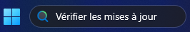
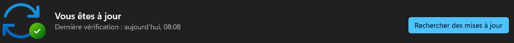
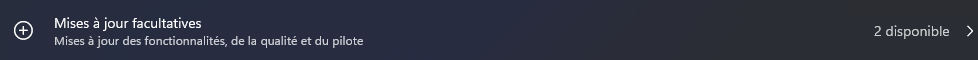
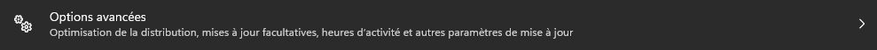
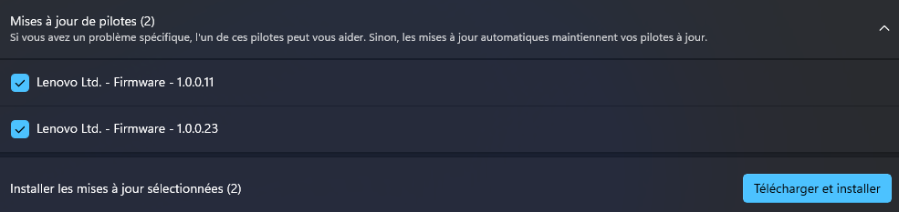
Cette machine virtuelle est dotée d'une fonction de mise à jour automatique des applications initialement installées, ainsi que celles ajoutées via la procédure décrite dans la partie "Les logiciels".
Dans le dossier "ESP", présent sur le bureau, double-cliquez sur le fichier nommé "Mise à jour du système".
Plusieurs phases de mises à jour vont ainsi être lancées. Veillez à accepter toutes les demandes qui vous sont faites.
À partir d'une certaine étape, il vous sera demandé si vous souhaitez également mettre à jour la distribution Linux présente dans la machine virtuelle.
Pour refuser, tapez n (non) et pour accepter, tapez o (oui).
En cas d'acceptation, il vous sera demandé le mot de passe que vous avez paramétré lors de l'initialisation du système. Il s'agit du mot de passe Linux, pas celui de votre session utilisateur. Si vous utilisez la version préinstallée du projet, le mot de passe se trouve dans le tutoriel d'import du fichier ".ova".
S'il est correctement entré, la mise à jour va se poursuivre et vous serez informé de la fin de ces opérations.
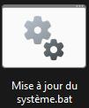
Vérifiez que votre système d'anonymisation soit bien activé.
Lancez ensuite le logiciel "My External IP" afin de vérifier que l'adresse IP qui s'y affiche est bien celle de votre système d'anonymisation.
Premier paramétrage
Cette partie ne concerne que les paramétrages à effectuer lors du premier montage de la machine virtuelle.
Elle ne sera plus à réaliser par la suite.
Une fois la machine virtuelle lancée, cliquez sur "Périphériques" puis cliquez sur "Insérer l'image CD des additions invités".
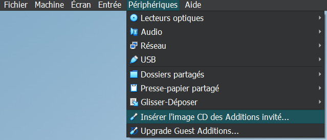
Ceci simule l'ajout d'un lecteur CD virtuel, qu'il vous sera proposé d'ouvrir. Lancez alors le fichier exécutable correspondant à votre ordinateur (Généralement "VBoxWindowsAdditions-amd64").
Cette étape nécessitera un redémarrage du système d'exploitation.
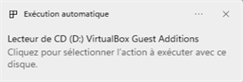
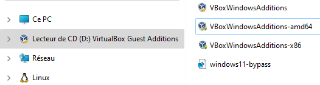
Il sera ensuite nécessaire de retourner dans le menu "Périphériques" puis de cliquer sur "Upgrade Guest Addition...".
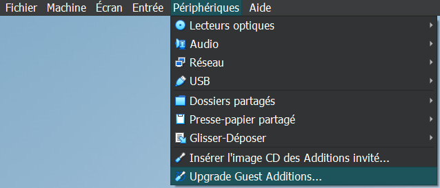
Les trois paramétrages suivants seront à définir par l'utilisateur, qui devra décider du niveau de sécurité qu'il estimera nécessaire à l'accomplissement de sa mission et à la sécurité de ses outils. Ils se situent également dans l'onglet "Périphériques".
Les options suivantes seront à éviter dès lors que l'enquête portera sur des personnes disposant vraisemblablement de connaissances informatiques avancées, ou s'il est prévu de laisser un virus infecter volontairement la machine virtuelle afin de s'en servir d'élément de preuve.
Dossier partagé
Cette option permettra à l'utilisateur de disposer d'un dossier qui sera partagé entre sa machine hôte et la machine virtuelle, afin d'échanger des fichiers entre les deux.
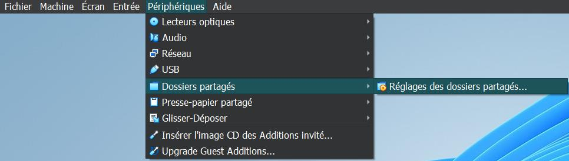
Pour mettre en place ce dossier partagé, cliquez sur "Périphériques > Dossiers partagés > Réglage des dossiers partagés...".
Cliquez sur le logo de dossier bleu avec un "+" vert, sur la droite de la fenêtre :
Configurez la fenêtre "Ajouter un dossier partagé" comme suit :
Chemin du dossier : Dossier sur votre ordinateur "hôte", qui sera partagé avec votre machine virtuelle.
Cochez les cases "Montage automatique" et "Configuration permanente".
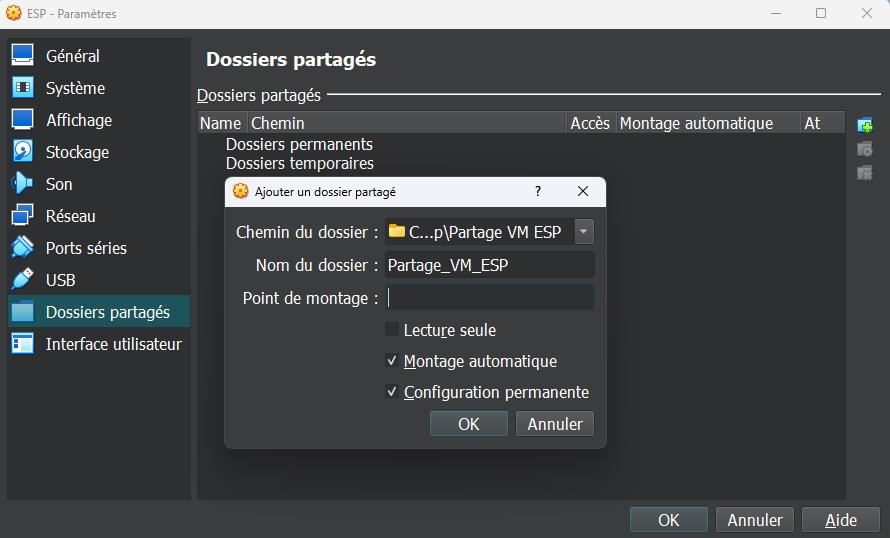
Le dossier partagé est ainsi accessible, sur la machine virtuelle, depuis l'onglet "Réseau" de l'explorateur de fichiers.
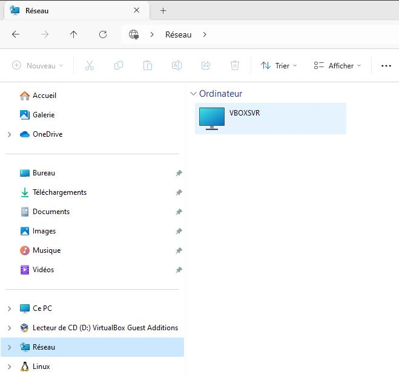
Presse-papiers partagé et glisser / déposer
Cette option offre la possibilité d'effectuer des "copiés / collés" entre la machine "hôte" et la machine virtuelle.
Disabled : Fonction désactivée
Hôte vers invité : Fonction ouverte de l'ordinateur hôte vers la machine virtuelle
Invité vers hôte : Fonction ouverte de la machine virtuelle vers l'ordinateur "hôte"
Bidirectionnel : Fonction possible dans les deux sens
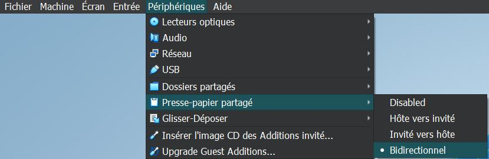
Ajout du numéro de licence et création d'un point de sauvegarde (Instantané)
À ce stade, vous utilisez une version d'essai du système d'exploitation de "Windows 11". Afin de la rendre valide dans le temps, vous devez ajouter un numéro de licence (devant être acheté préalablement). Cette partie est facultative et dépend de la volonté de l'utilisateur.
Si vous souhaitez ajouter un numéro de licence, suivez ces étapes :
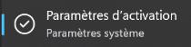
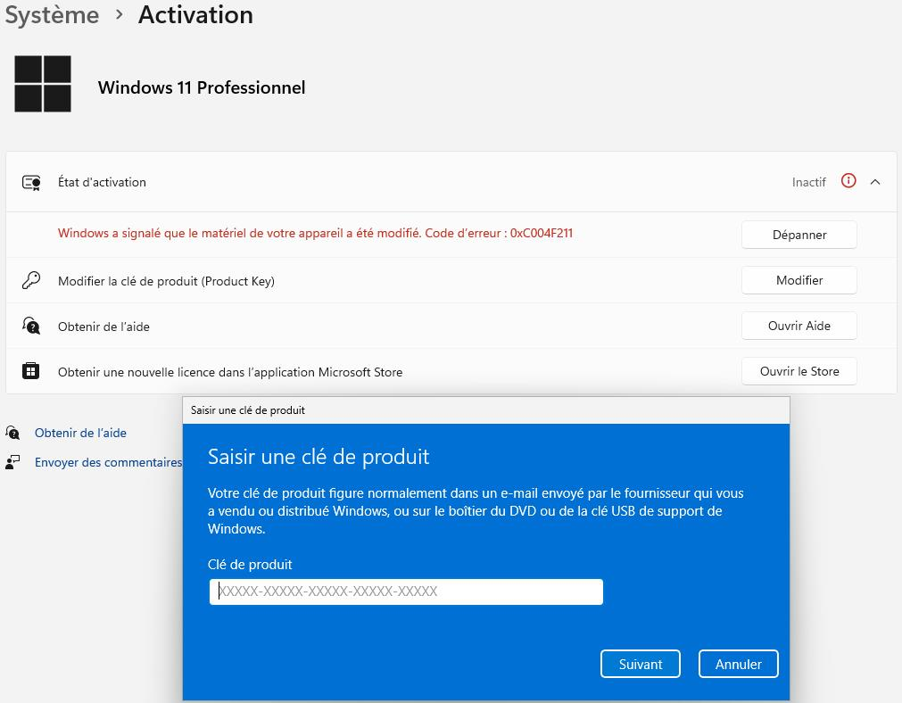
Dans la partie "Modifier la clé de produit (Product Key)", cliquez sur "Modifier" et ajoutez une clé produit correspondant à Windows 11 Professionnel.
À cette étape, l'ensemble des paramétrages initiaux sont terminés. Afin de nous permettre de revenir à ce stade de la machine virtuelle à chaque début d'une nouvelle enquête sous pseudonyme, il est nécessaire de définir un point de sauvegarde. Pour ce faire, nous allons utiliser la fonction "Instantané" du logiciel "Virtual Box".
Il sera possible de revenir à ce point chaque fois que nécessaire, en supprimant toute trace d'utilisation ultérieure de la machine virtuelle.
Cliquez sur "Machine" puis "Prendre un instantané...".
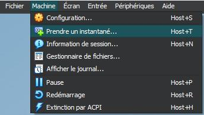
Modifiez le nom et la description de l'instantané, avec des termes permettant de l'identifier clairement.
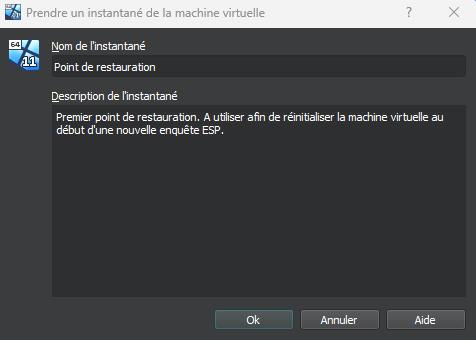
Une fois votre enquête terminée, si vous souhaitez revenir à ce point de restauration, fermez la machine virtuelle et revenez sur le logiciel "VirtualBox" depuis votre machine "hôte".
Au niveau de la ligne correspondant à votre machine virtuelle, cliquez sur le logo :
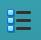
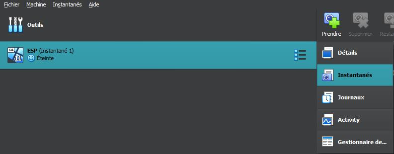
Sélectionnez l'instantané souhaité et cliquez sur le bouton "Restaurer".
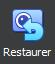
Choisissez si vous souhaitez un nouvel instantané ou non, et cliquez sur "Restaurer".
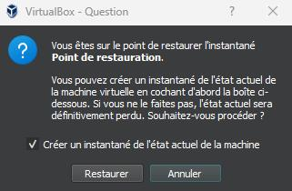